콘크리트기사 (2013-03-10 기출문제)
1과목: 재료 및 배합
1. KS F 2560(콘크리트용 화학혼화제)의 규정에 따라 AE감수제의 성능시험항목이 아닌 것은?
- 감수율
- 길이 변화비
- 슬럼프 경시변화량
- 동결 융해에 대한 저항성
(정답률: 55%)

2. 고로시멘트에 관한 설명 중 옳지 않은 것은?
- 고로시멘트를 사용한 콘크리트는 초기양생이 충분치 않으면 보통포틀랜드시멘트를 사용한 콘크리트에 비해 건조수축이 심해질 수 있다.
- 고로시멘트를 사용한 콘크리트는 시멘트의 수화반응에서 생기는 Ca(OH)2가 증가하여 내해수성, 내화학성이 향상된다.
- 고로시멘트를 사용한 콘크리트는 약 6개월 이후의 장기재령이 되면 보통포틀랜드시멘트를 사용한 콘크리트에 비해 동등 혹은 그 이상의 압축강도가 얻어진다.
- 고로시멘트를 사용한 콘크리트의 초기재령의 강도는 보통콘크리트시멘트를 사용한 콘크리트 보다 일반적으로 적으며, 이러한 경향은 물-시멘트비가 작아질수록 현저하다.
(정답률: 43%)
3. 굵은골재의 체가름 시험결과에서 굵은골재 최대치수(Gmax)와 조립률(FM)을 바르게 표시한 것은?
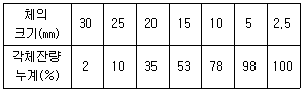
- 25mm, 7.11
- 25mm, 7.76
- 20mm, 7.11
- 20mm, 7.76
(정답률: 77%)
4. 콘크리트용 강섬유의 평균인장강도는 얼마 이상의 값을 가져야 하는가? (단. KS F 2564에 규정된 값)
- 600MPa
- 500MPa
- 400MPa
- 300MPa
(정답률: 80%)
5. 콘크리트 배합설계에서 실험으로부터 얻은 재령 28일 압축강도와 물-결합재비와의 관계식이 f28=-14.0+22.0×B/W (MPa)로 얻어졌다. 설계기준강도를 30MPa로 할 경우 적당한 물-결합재비의 값은?
- 50%
- 52%
- 54%
- 56%
(정답률: 81%)
6. 일반 콘크리트에서 물-결합재비에 대한 설명으로 틀린 것은?
- 압축강도와 물-결합재비와의 관계는 시험에 의해 정하는 것을 원칙으로 한다. 이 때 공시체는 지령 28일을 표준으로 한다.
- 재빙화학제가 사용되는 콘크리트의 물-결합재비는 45%이하로 한다.
- 콘크리트의 수밀성을 기준으로 물-결합재비를 정할 경우 그 값은 40% 이하로 한다.
- 콘크리트의 탄산화 저항성을 고려하여 물-결합재비를 정할 경우 55% 이하로 한다.
(정답률: 80%)
7. 다음 중 시멘트 응결시험 방법은?
- 플로우(flow) 시험
- 블레인 시험
- 길모어침에 의한 방법
- 오토클레이브 방법
(정답률: 80%)
8. AE혼화제 사용에 의한 연행공기가 콘크리트 중에서 하는 역할로 잘못 설명된 것은?
- 워커빌리티를 크게 개선시킨다.
- 동결융해에 대한 저항성을 증대시킨다.
- 재료의 분리 및 블리딩을 감소시킨다.
- 공기량이 증가함에 따라 압축강도도 약간 증가된다.
(정답률: 79%)
9. 다음 중 콘크리트용 모래에 포함되어 있는 유기불순물 시험에서 사용하지 않는 약품은?
- 수산화나트륨
- 탄닌산
- 페놀프탈레인
- 메틸알코올
(정답률: 69%)
10. 다음 배합수에 포함될 수 있는 불순물 중 응결지연 작용을 나타내는 것은?
- 황산칼슘
- 질산염
- 염화암모늄
- 탄산나트륨
(정답률: 69%)
11. 물-시멘트비 50%, 잔골재율 43.0%, 공기량 5.0% 및 단위수량 170kg의 조건으로한 콘크리트의 시방배합결과에 대한 설명으로 틀린 것은? (단, 시멘트 밀도 : 0.00315g/mm3, 잔골재 표면건조 포화상태 밀도 : 0.00257g/mm3, 굵은골재 표면건조 포화상태 밀도 : 0.00265g/mm3)
- 단위 굵은골재량은 1027kg이다.
- 단위 잔골재량은 743kg이다.
- 골재의 절대용적은 671ℓ이다.
- 단위시멘트량은 340kg이다.
(정답률: 67%)
12. 시멘트 관련 KS 규격에 관하여 옳지 않은 것은?
- 자열 포들랜드 시멘트에서는 수화열을 억제하기 위하여 최저 C2S량을 규정하고 있다.
- 내황산염 포들랜드 시멘트에서는 황산염에 의한 팽창을 억제하기 위하여 최대 C2A량을 규정하고 있다.
- 고로슬래그시멘트에서는 잠재수경성을 확보하기 위하여 염기도의 최소값을 규정하고 있다.
- 고로슬래그시멘트에서는 알칼리골재반응을 억제하기 위하여 최대 알칼리량을 규정하고 있다.
(정답률: 55%)
13. 굵은 골재의 밀도 및 흡수율시험에서 아래 표와 같은 조건인 경우 1회 시험에 사용하는 시료의 최소 질량으로 가장 적합한 것은?
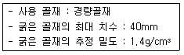
- 1.4kg
- 2.3kg
- 3.1kg
- 4kg
(정답률: 40%)
14. 레디믹스트 콘크리트에서 회합수로 사용할 경우 주의할 사항 중 틀린 것은?
- 고강도 콘크리트의 경우 회수수를 사용하여서는 안된다.
- 슬러지수의 사용시 단위 슬러지 고형분율은 콘크리트 질량의 3% 이하로 한다.
- 회수수의 품질시험항목은 4가지로서 염소이온량, 시멘트 응결시간의 차, 모르타르 압축 강도의 비, 단위 슬러지 고형분율이다.
- 콘크리트를 배합할 때, 회수수 중에 함유된 슬러지 고형분은 물의 질량에는 포함되지 않는다.
(정답률: 41%)
15. 시방배합을 현장배합을 고칠 경우에 고려하여야 하는 사항에 대한 설명에 대한 설명으로 거리가 먼 것은?
- 혼화제를 희석시킨 희석수량을 고려하여야 한다.
- 골재의 함수상태를 고려하여야 한다.
- 5mm체에 남는 굵은 골재량 등 골재의 입도를 고려하여야 한다.
- 운반중 공기량의 경시변화를 고려하여야 한다.
(정답률: 58%)
16. 시멘트를 구성하는 주요 광물 중 초기강도에 가장 영향을 많이 주는 광물은?
- 3CaOㆍSiO2 (C3S)
- 2CaOㆍSiO2 (C3S)
- 4CaOㆍAl2O3ㆍFe2O3 (C4AF)
- 3CaOㆍAl2O3ㆍ (C3A)
(정답률: 50%)
17. 습윤상태 골재 1000g의 함수량이 3.68%이었을 때 이골재의 절대건조 질량(g)은?
- 895.34g
- 923.65g
- 964.51g
- 996.97g
(정답률: 68%)
18. 콘크리트의 배합설계에서 콘크리트의 내동해성을 기준으로 하여 물-결합재비를 정한 경우 아래 표와 같은 조건에서의 최소 설계기준압축강도는?
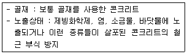
- 24MPa
- 27MPa
- 30MPa
- 35MPa
(정답률: 31%)
19. 다음 표는 시멘트의 비중 시험 결과 중 일부이다. 이 시멘트의 비중은?
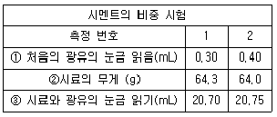
- 3.10
- 3.11
- 3.13
- 3.15
(정답률: 56%)
20. 20회의 압축강도 시험으로부터 구한 표준편차가 4.0이고 설계기준압축강도가 40MPa인 경우 배합강도는? (단, 표준편차의 보정계수를 고려하여 구하시오.)
- 45.4MPa
- 45.8MPa
- 46.1MPa
- 46.6MPa
(정답률: 66%)
2과목: 제조, 시험 및 품질관리
21. 콘크리트의 내동해성에 관한 설명으로 틀린 것은?
- 연행공기는 내동해성 향상에 효과적이다.
- 공기량이 동일한 경우 기포간격 계수(spacing factor)가 클수록 내동해성이 향상된다.
- 흡수율이 큰 연석은 동결시 팝아웃(Pop-out)을 유발시킨다.
- 내동해성은 동결융해를 반복한 공시체의 동탄성계수에 의해 평가할 수 있다.
(정답률: 76%)
22. 콘크리트의 품질관리의 관리도에서 계수값 관리도에 포함되지 않는 것은?
- P 관리도
- C 관리도
- u 관리도
- x 관리도
(정답률: 80%)
23. 굵은 콘크리트의 압축강도에 영향을 미치는 요소에 대한 설명이 잘못된 것은?
- 단위 수량이 동일한 경우 시멘트량이 증가하면 압축강도는 증가한다.
- 물-시멘트비가 낮을수록 압축강도는 증가한다.
- 시험체의 재하속도가 느릴수록 압축강도는 증가한다.
- 공기량이 적을수록 압축강도는 증가한다.
(정답률: 64%)
24. 콘크리트의 크리프에 관한 설명 중 틀린 것은?
- 재하기간중의 대기의 습도가 높을수록 크리트가 크다.
- 시멘트량이 많을수록 크리프가 크다.
- 재하시의 재령이 작을수록 크리프가 크다.
- 보통시멘트는 조강시멘트에 비하여 크리프가 크다.
(정답률: 69%)
25. 레디믹스트 콘크리트의 품질 중 공기량에 대한 규정인 아래 표의 내용 중 틀린 것은?
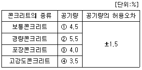
- ①
- ②
- ③
- ④
(정답률: 83%)
26. 레디믹스트 콘크리트(KS F 4009)에서 규정하고 있는 콘크리트 회수수의 품질기준으로 틀린 것은?
- 염소이온량 : 350mg/L 이하
- 시멘트 응결시간의 차 : 초결 30분 이내, 종결 60분 이내
- 모르터 압축 강도비 : 재령 7일 및 28일에서 90% 이상
- 단위 슬러지 고형분율 : 3.0%를 초과하면 안 됨
(정답률: 80%)
27. 콘크리트 시험용 원주형 공시체(ø100mm×200mm)로 쪼갬 인장강도 시험을 실시한 결과 150kN에서 파괴되었다. 콘크리트의 쪼갬인장강도로 옳은 것은?
- 2.5MPa
- 3.6MPa
- 4.8MPa
- 5.7MPa
(정답률: 57%)
28. 동결융해 저항성을 알아보기 위한 급속 동결융해에 대한 콘크리트의 저항 시험 방법에 관한 설명으로 틀린 것은?
- 동결융해 1사이클의 소요시간은 2시간 이상, 4시간 이하로 한다.
- 동결융해 1사이클은 공시체 중심부의 온도를 원칙으로 하며 원칙적으로 4℃에서 -18℃로 떨어지고, 다음에 -18℃에서 4℃로 상승하는 것으로 한다.
- 시험의 종료는 300사이클로 하며, 그 때까지 상대동탄성계수가 60%이하가 되는 사이클이 있으면 그 사이클에서 시험을 종료한다.
- 공시체의 중심과 표면의 온도차는 항상 20℃를 초과해서는 안된다.
(정답률: 56%)
29. 콘크리트의 받아들이기 품질검사에 대한 설명으로 틀린 것은?
- 콘크리트의 받아들이기 품질관리는 콘크리트를 타설하기 전에 실시하여야 한다.
- 강도검사는 콘크리트의 배합검사를 실시하는 것을 표준으로 한다.
- 내구성 검사는 공기량, 염소이온량을 측정하는 것으로 한다.
- 검사결과 불합격으로 판정된 콘크리트는 책임기술자의 지시에 따라 조치를 취하여야 한다.
(정답률: 77%)
30. NaCl을 질량으로 0.03% 포함된 해사를 950kg/m3 사용하여 콘크리트를 제조할 경우, 해사로 인한 콘크리트의 염화물이온(Cl-)함유량을 구하면?
- 0.285kg/m3
- 0.143kg/m3
- 0.173kg/m3
- 0.346kg/m3
(정답률: 40%)
31. 콘크리트의 워커빌리티 밑 반죽질기에 대한 일반적인 설명으로 틀린 것은?
- 단위 수량이 많을수록 콘크리트의 유동성이 크게 되지만, 단위수량을 증가시킬수록 재료분리가 발생하기 쉬워지므로 워커빌리티가 좋아진다고는 말할 수 없다.
- 단위 시멘트량이 많아질수록 그 콘크리트의 성형성은 증가하므로, 일반적으로 부배합 콘크리트가 빈배합 콘크리트에 비해 워커빌리티가 좋다고 할 수 있다.
- 공기량 1%의 증가에 대하여 슬럼프가 30mm 정도 크게되며, 슬럼프를 일정하게 하면 단위 수량을 약 8% 저감할 수 있다. 이러한 공기량의 워커빌리티 개선효과는 부배합의 경우에 현저하다.
- 골재 중의 세립분, 특히 0.3mm 이하의 세립분은 콘크리트의 점성을 높이고 성형성을 좋게 한다. 그러나 세립분이 많게 되면 반죽질기가 적게 되므로 골재는 조립한 것부터 세립한 적당한 비율로 혼합할 필요가 있다.
(정답률: 46%)
32. 콘크리트 타설검사 항목이 아닌 것은?
- 타설설비 및 인원배치
- 타설방법
- 타설량
- 콘크리트 타설온도
(정답률: 44%)
33. 다음에서 콘크리트의 비비기에 사용되는 믹서 중 강제식 믹서가 아닌 것은?
- 드럼 믹서(drum mixer)
- 팬형 믹서(pan tupe mixer)
- 1축 믹서(one shaft mixer)
- 2축 믹서(twin shaft mixer)
(정답률: 87%)
34. 아래 그림은 초음파 속도법의 측정법 중 한 종류를 나타낸다. 이 측정법의 명칭으로 옳은 것은?
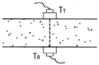
- 표면법
- 직접법
- 간접법
- 추정법
(정답률: 63%)
35. 일반 콘크리트에 사용할 수 있는 부순 굵은골재의 물리적 성질에 대한 규정값을 표기한 것 중 틀린 것은?
- 절대 건조 밀도-2.50g/cm3 이상
- 흡수율 - 3.0% 이하
- 마모율 - 30% 이하
- 안정성 - 12% 이하
(정답률: 67%)
36. 콘크리트 휨강도 시험에서 공시체에 하중을 가하는 속도는 가장자리 응력도의 증가율이 매초 얼마 정도가 되도록 하여야 하는가?
- 4±0.6MPa
- 6±0.4MPa
- 0.6±0.4MPa
- 0.06±0.04MPa
(정답률: 84%)
37. 콘크리트의 받아들이기 품질검사에서 염소이온량의 검사 횟수로서 옳은 것은? (단. 바다 잔골재를 사용할 경우)
- 2회/일
- 1회/일
- 2회/주
- 1회/주
(정답률: 86%)
38. 일정량의 AE제를 사용한 콘크리트의 공기량의 증가되는 요소에 대한 설명으로 틀린 것은?
- 단위 잔골재량이 작을수록 공기량은 증가한다.
- 콘크리트의 온도가 낮을수록 공기량은 증가한다.
- 슬럼프가 클수록 공기량은 증가한다.
- 시멘트의 분말도가 높을수록 공기량은 증가한다.
(정답률: 41%)
39. 콘크리트의 물성시험 방법 중 촉진시험이 가능하지 않은 것은?
- 중성화시험
- 크리프시험
- 동결융해시험
- 염화물이온침투시험
(정답률: 50%)
40. 레디믹스트 콘크리트의 제조설비에 대한 설명으로 틀린 것은?
- 믹서는 고정 믹서로 한다.
- 골재 저장 설비는 콘크리트 최대 출하량의 1주일분 이상에 상당하는 골재량을 저장할 수 있는 크기로 한다.
- 플랜트는 원칙적으로 각 재료를 위한 별도의 저장빈을 구비한다.
- 시멘트의 저장 설비는 종류에 따라 구분하고, 시멘트의 풍화를 방지할 수 있어야 한다.
(정답률: 84%)
3과목: 콘크리트의 시공
41. 고강도 콘크리트의 타설에서 기둥과 벽체 콘크리트, 보와 슬래브 콘크리트를 일체로 하여 타설할 경우에 대한 설명으로 옳은 것은?
- 보 아래면에서 타설을 중지한 다음, 기둥과 벽에 타설한 콘크리트가 침하한 후, 슬래브의 콘크리트를 타설하여야 한다.
- 수직 부재인 기둥과 벽체를 먼저 타설함과 동시에 보와 슬래브를 즉시 타설하여야 한다.
- 수평 부재인 보와 슬래브를 먼저 타설함과 동시에 기둥과 벽체를 즉시 타설하여야 한다.
- 기둥과 벽체, 보와 스래브 콘크리트를 동시에 타설하여야 한다.
(정답률: 53%)
42. 바닥틀에 관련한 시공이음에 대한 설명으로 옳지 않은 것은?
- 바닥틀의 시공이음은 슬래브 또는 보의 경간 중앙부 부근에 두어야 한다.
- 바닥틀과 일체로 된 기둥 또는 벽의 시공이음은 바닥틀과의 경계부분에 설치하는 것이 좋다.
- 보가 작은 보와 교차할 경우에는 작은 보 폭의 3배 거리만큼 떨어진 곳에 보의 시공이음을 설치한다.
- 헌치 또는 내민 부분을 가지는 구조물에서는 바닥틀과 연속하여 콘크리트를 타설하여야 한다.
(정답률: 44%)
43. 방사선 차폐용 콘크리트에 대한 설명으로 틀린 것은?
- 물-결합재비는 60% 이하를 원칙으로 한다.
- 일반적인 경우 콘크리트의 슬럼프는 150mm 이하로 하여야 한다.
- 생물체의 방호를 위하여 X선, γ선 및 중성자선을 차폐할 목적으로 사용된다.
- 콘크리트의 밀도를 보통의 경우보다 높게 할 필요가 있을 경우에는 바라이트, 자철광 등 밀도가 높은 중량골재를 사용하여야 한다.
(정답률: 66%)
44. 거푸집 및 동바리 구조계산에 대한 설명 중 틀린 것은?
- 고정하중은 철근 콘크리트와 거푸집의 중량을 고려하여 합한 하중이다.
- 콘크리트의 단위중량은 철근의 중량을 포함하여 보통콘크리트의 경우 24kN/m3을 적용한다.
- 거푸집하중은 최소 4kN/m3 이상을 적용한다.
- 거푸집설계에서는 굳지 않은 콘크리트의 측압을 고려하여야 한다.
(정답률: 63%)
45. 숏크리트 시공의 일반적인 설명으로 틀린 것은?
- 건식 숏크리트는 배치 후 45분 이내에 뿜어붙이기를 실시하여야 한다.
- 습식 숏크리트는 배치 후 60분 이내에 뿜어붙이기를 실시하여야 한다.
- 숏크리트는 타설되는 장소의 대기온도가 38℃이상이 되면 건식 및 습식 숏크리트 모두 뿜어붙이기를 할 수 없다.
- 숏크리트는 대기 온도가 4℃이상일 때 뿜어붙이기를 실시한다.
(정답률: 65%)
46. 콘크리트의 시공이음에 대한 설명으로 틀린 것은?
- 시공이음은 될 수 있는 대로 전단력이 작은 위치에 설치하는 것이 원칙이다.
- 시공이음은 부재의 압축력이 작용하는 방향과 나란하게 하는 것이 원칙이다.
- 시공이음에 있어서 철근으로 보강하는 경우 정착길이는 철근 지름의 20배 이상으로 한다.
- 시공이음을 계획할 때 온도, 건조수축 등에 의한 균열의 발생에 대해서도 고려해야 한다.
(정답률: 59%)
47. 포장 콘크리트의 거푸집 및 보강재에 대한 설명으로 틀린 것은?
- 거푸집의 측면은 브레이싱으로 저판에 지지되어야 하고, 이 때 저판에서의 브레이싱 지지점은 측면으로부터 높이의 3분의 1지점으로 하여야 한다.
- 거푸집은 콘크리트 치기 전에 깨끗이 닦고 유지류를 발라두어야 한다.
- 거푸집은 윗면의 높이 변화가 길이 3m당 3mm이하이어야 하며, 측면의 변화는 6mm이하이어야 한다.
- 곡선반경 50m이하의 곡선부에는 목재거푸집을 사용할 수 있으며, 600mm마다 강재 지지말뚝을 설치하여야 한다.
(정답률: 60%)
48. 콘크리트의 양생에 대한 일반적인 설명으로 옳은 것은?
- 초기재령에서의 급격한 건조는 강도발현을 지연시킬 뿐만 아니라 표면균열의 원인이 된다.
- 시멘트의 수화반응은 양생온도에 크게 좌우되지 않는다.
- 고로슬래그 미분말을 50%정도 치환하면 보통 콘크리트에 비해서 습윤양생 기간을 단축시킬 수 있다.
- 콘크리트 표면이 건조함에 따라 수밀성이 향상되기 때문에 수밀콘크리트는 가능한 한 빨리 건조될 수 있도록 습윤양생 기간을 일반보다 짧게 한다.
(정답률: 47%)
49. 댐 콘크리트의 관로식 냉각(pipe-cooling)에 대한 일반적인 설명으로 옳지 않은 것은?
- 냉각관은 보통 바깥지름 25mm 정도의 강관을 주로 사용한다.
- 통수기간은 일반적으로 2~4주 정도이다.
- 일반적으로 냉각관 1 코일의 길이는 200~300m 정도로 한다.
- 냉각효율의 증대를 위해 동수량은 1 코일당 매분 30ℓ 이상으로 한다.
(정답률: 79%)
50. 고강도콘크리트에 관한 설명으로 틀린 것은?
- 콘크리트를 타설한 후 경화할 때까지 직사광선이나 바람에 의해 수분이 증발하지 않도록 하여야 한다.
- 콘크리트의 운반시간 및 거리가 긴 경우에 사용하는 운반차는 트럭믹서, 트럭 애지테이터 혹은 건비빔 믹서로 하여야 한다.
- 단위수량을 줄이고 워커빌리티의 개선을 위하여 AE제를 사용하는 것을 원칙으로 한다.
- 잔골재율은 소요의 워커빌리티를 얻도록 시험에 의하여 결정하여야 하며, 가능한 적게 하도록 한다.
(정답률: 53%)
51. 일반 콘크리트의 표면마무리에 대한 설명으로 옳지 않은 것은?
- 시공이음이 미리 정해져 있지 않을 경우에는 직선상의 이음이 얻어지도록 시공하여야 한다.
- 미리 정해진 구획의 콘크리트 타설은 연속해서 일괄작업으로 끝마쳐야 한다.
- 콘크리트 면의 마무리 두께가 7mm 이상 또는 바탕의 영향을 많이 받지 않는 마무리의 경우 평탄성은 1m당 10mm 이하를 유지하여야 한다.
- 제울치장 마무리 또는 마무리 두께가 얇은 경우에는 1m당 7m 이하의 평탄성을 유지하여야 한다.
(정답률: 38%)
52. 유동화 콘크리트의 제조방식 중 유동화에 가장 효과적인 방법은?
- 레미콘 공장에서 유동화제를 첨가하고 공장에서 유동화하는 방법
- 레미콘 공장에서 유동화제를 첨가하고 현장에서 유동화하는 방법
- 현장에서 유동화제를 첨가하고 레미콘 공장에서 유동화하는 방법
- 현장에서 유동화제를 첨가하고 현장에서 유동화하는 방법
(정답률: 70%)
53. 공장제품의 콘크리트 품질에 관한 설명으로 틀린 것은?
- 일반적으로 공장제품에는 물-시멘트비가 작은 된 반죽의 콘크리트가 많이 사용된다.
- 오토클레이브양생 등의 특수한 촉진양생을 하는 공장제품에서는 14일 이전의 적절한 재령에서의 압축강도 시험값을 압축강도로 나타내는 것을 원칙으로 한다.
- 공장제품의 압축강도는 소정의 재령이내에 출하할 경우 출하재령의 압축강도를 기준으로 할 수 있다.
- 즉시 거푸집을 탈형하는 제품에 잔골재를 적게 하면 거푸집 탈형직후의 변형을 작게할 수 있다.
(정답률: 50%)
54. 매스콘크리트의 온도균열 발생에 대한 검토는 온도균열지수에 의해 평가하는 것을 원칙으로 하고 있다. 만약, 연질의 지반위에 타설된 평판구조 등과 같이 내부구속응력이 큰 구조물에서 △Ti(내부온도가 최고일 때 내부와 표면과의 온도차)가 12.5℃ 발생하였다면 간이적인 방법으로 온도균열지수를 구하면?
- 0.8
- 1.2
- 1.5
- 2.0
(정답률: 58%)
55. 고온ㆍ고압의 증기솥 속에서 상압보다 높은 압력으로 고온의 수증기를 사용하여 실시하는 양생방법은?
- 오토클레이브양생
- 증기양생
- 촉진양생
- 고주파양생
(정답률: 80%)
56. 한중 콘크리트는 소요 압축강도가 얻어질 때까지 콘크리트의 온도를 5℃ 이상으로 유지하는 등 초기양생을 실시하여야 한다. 계속해서 또는 자주 물로 포화되는 부분에 설치된 부재의 단면 두께가 보통의 경우일 때 양생을 종료할 수 있는 소요 입축강도의 표준으로 옳은 것은?
- 15MPa
- 12MPa
- 10MPa
- 5MPa
(정답률: 42%)
57. 서중콘크리트의 시공은 일평균 기온이 몇 ℃를 초과하는 것이 예상되는 경우에 실시하는가?
- 15℃
- 20℃
- 25℃
- 30℃
(정답률: 70%)
58. 프리플레이스트 콘크리트에 사용되는 혼화재료로 적당하지 않은 것은?
- 팽창제
- 응결촉진제
- 고성능감수제
- 고로슬래그 미분말
(정답률: 50%)
59. 한중 콘크리트의 시공에서 콘크리트 타설 후 충분히 경화되기 전에 해수에 씻기면 모르타르 부분이 유실되는 등 피해를 받을 우려가 있으므로 콘크리트가 직접 해수에 닿지 않도록 보호하여야 한다. 아해 표의 조건과 같은 경우 보호하여야 하는 기간의 표준으로 옳은 것은?
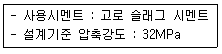
- 3일간
- 5일간
- 콘크리트의 압축강도가 22MPa이 될 때 까지
- 콘크리트의 압축강도가 24MPa이 될 때 까지
(정답률: 40%)
60. 유동화 콘크리트 제조시 베이스 콘크리트 슬럼프의 최대값으로 적당한 것은? (단, 보통콘크리트인 경우)
- 80mm 이하
- 120mm 이하
- 150mm 이하
- 180mm 이하
(정답률: 35%)
4과목: 구조 및 유지관리
61. 그림과 같은 T형단면에 3-D35(As=2870mm2)의 철근이 배근 되었다면 설계휨강도 øMn의 크기는? (단, fck=21MPa, fy=400MPa이다.)
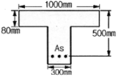
- 357.8kNㆍm
- 383.3kNㆍm
- 445.1kNㆍm
- 456.5kNㆍm
(정답률: 34%)
62. 기둥에서 축방향 철근량의 최소한계를 두는 이유로 잘못된 설명은?
- 휨강도보다는 압축단면을 보강하기 위해서
- 시공시 재료분리로 인한 부분적 결함을 보완하기 위해서
- 콘크리트 크리프 및 건조수축의 영향을 감소시키기 위해서
- 예상 외의 평심하중이 적용할 가능성에 대비하기 위해서
(정답률: 74%)
63. 아래 표의 내용과 같은 열화현상에 대한 설명으로 틀린 것은?
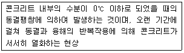
- 흡수율이 큰 골재를 사용하였을 경우 콘크리트 표층부에 함수율이 높은 골재가 동결하여 팽창함으로써 골재 표면 주위의 모르타르가 탈락되어 표면이 파이는 팝아웃 현상이 발생할 수 있다.
- 콘크리트 표면부에 시멘트 풀 또는 모르타르가 동결융해작용에 의해 벗겨져서 표면이 거칠어지는 박리 현상이 발생할 수 있다.
- AE제를 사용하여 발생하는 미세한 다량의 연행공기는 내부수분이 동결하여 체적이 팽창함에 따라 발생되는 팽창압을 완화시켜 준다.
- 콘크리트 타설 후 시멘트의 수화가 충분히 진행되지 않고, 내부의 수분이 얼음으로 변하는 과정에서 직경이 큰 공극이 국소적으로 형성되어 콘크리트의 강도가 발현되지 않는다.
(정답률: 37%)
64. 콘크리트에 그림과 같은 균열이 발생할 경우 균열원인으로서 가장 관계가 깊은 것은?
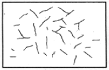
- 시멘트 이상응결
- 소성수축균열
- 콘크리트 충전불량
- 블리딩
(정답률: 32%)
65. 연속섬유 시트접착공법의 장점으로서 옳지 않은 것은?
- 내식성이 우수하고, 염해지역의 콘크리트구조물 보강에도 적용할 수 있다.
- 다른 보강공법과 비교하여 단면강성의 증가가 크다.
- 일정한 격자모양으로 부착함으로써 발생된 균열의 진전상태 관찰이 가능하다.
- 작업공간이 한정된 장소에서는 작업이 편리하다.
(정답률: 48%)
66. 폭 b=300mm, 유효깊이 d=400mm, 등가직사각형 깊이 a=136mm인 직사각형 단면의 보가 있다. 강도설계법에 의한 설계강도 산정 시 사용하는 강도감소계수 값은? (단, fck=24MPa, fy=400MPa이다.)
- 0.78
- 0.82
- 0.83
- 0.84
(정답률: 35%)
67. 콘크리트구조물의 점검(진단)방법 중 음향방출(Acousic Emission)법에 대한 설명으로 틀린 것은?
- 재료의 동적인 변화를 파악하는 것이 가능하다.
- 구조물의 사용을 중단하지 않고도 검사가 가능하다.
- Kaiser효과로 인해 검사횟수에 제한적이다.
- 기존 구조물에 하중을 가하지 않은 상태에서도 검사가 용이하다.
(정답률: 60%)
68. 아래 그림과 같은 복철근 직사각형보에서 공칭휨강도(Mn)는 약 얼마인가? (단, fck=35MPa, fy=350MPa, b=300mm, d=460mm, d'=60mm, As=4765mm2, As'=1284mm2이다.)
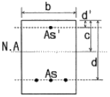
- 657kNㆍm
- 757kNㆍm
- 857kNㆍm
- 957kNㆍm
(정답률: 56%)
69. 중성화 속도에 영향을 미치는 요인에 대한 일반적인 설명으로 틀린 것은?
- 밀도가 작은 골재를 사용한 콘크리트는 중성화가 빨라진다.
- 조강 포틀랜드 시멘트를 사용한 콘크리트는 보통 포틀랜드 시멘트를 사용한 콘크리트에 비해 중성화가 느리다.
- 경량 골재 콘크리트는 보통 중량 골재 콘크리트보다 중성화가 빠르다.
- 옥내는 옥외의 경우보다 중성화가 늦다.
(정답률: 48%)
70. 균열보수기법 중 에폭시 주입법에 대한 설명으로 틀린 것은?
- 균열이 젖어 있거나 물이 새고 있는 경우에도 확실한 보수효과가 있다.
- 폭이 작은 균열은 엑폭시를 주입함으로써 부착시킬 수 있다.
- 에폭시 주입압력이 과도한 경우 기존의 균열을 전파시킬 수 있는 위험이 뒤따른다.
- 수평균열은 균열의 한쪽 끝으로부터 에폭시를 주입하고 난 뒤 다른 쪽에서 에폭시를 주입한다.
(정답률: 42%)
71. 1방향 철근콘크리트 슬래브의 전체 단면적이 2000000mm2이고, 0.0035의 항복변형률에서 측정한 철근의 설계기준항복강도가 500MPa인 경우, 수축 및 온도철근량의 최소값은?
- 7000mm2
- 4000mm2
- 3200mm2
- 2500mm2
(정답률: 19%)
72. 경간 10m의 보를 대칭 T형보로서 설계하려고 한다. 슬래브 중심간의 거리를 2m, 슬래브의 두께를 120mm, 복부의 폭을 250mm로 할 때 플랜지의 유효폭은?
- 4000mm
- 3750mm
- 2170mm
- 2000mm
(정답률: 62%)
73. 콘크리트에 발생하는 소성수축균열을 방지하는 방법으로 적절하지 못한 것은?
- 동풍이 잘 되도록 조치한다.
- 표면을 덮개로 보호한다.
- 표면에 급격한 온도변화가 생기지 않도록 한다.
- 직사광선을 받지 않도록 한다.
(정답률: 77%)
74. D13철근을 U형 수직 스터럽으로 배치한 직사각형 단철근보에서 공칭 전당강도(Vn)는 얼마인가? (단, D13철근 1본의 단면적=126.7mm2, 스터럽 간격=120mm, 단면폭=300mm, 유효깊이=500mm, fck=30MPa, fy=400MPa)
- 359kN
- 478kN
- 559kN
- 647kN
(정답률: 35%)
75. 단면 증설 공법에 의한 구조물 보강 후 평가 방법으로 가장 적합한 것은?
- 누수진단
- 기포조사
- 재하시험
- 육안조사
(정답률: 69%)
76. 경간이 15m인 거더에 단면적이 1115mm2인 PS강재를 사용하여 양단에 1360kN을 긴장하여 보강하고자 할 때, PS 강재에 발생하는 늘음량은? (단, PS강재의 탄성계수는 2×105MPa이며, 긴장재의 마찰과 콘크리트의 탄성수축은 무시한다.)
- 73.2mm
- 77.8mm
- 82.4mm
- 91.5mm
(정답률: 16%)
77. 콘크리트에 함유된 염화물 이온량 측정용 지시약으로 적절하지 않은 것은?
- 질산은
- 페놀프탈레인
- 티오시안산 제2수은
- 크롬산 칼륨
(정답률: 79%)
78. 표피철근(skin reinforcement)에 대한 설명으로 옳은 것은?
- 전체 깊이가 600mm를 초과하는 휨부재 복부의 상하면에 부재 축방향으로 배치하는 철근
- 전체 깊이가 600mm를 초과하는 휨부재 복부의 상하면에 부재 축의 직각방향으로 배치하는 철근
- 전체 깊이가 900mm를 초과하는 휨부재 복부의 양 측면에 부재 축방향으로 배치하는 철근
- 전체 깊이가 900mm를 초과하는 휨부재 복부의 양 측면에 부재 측의 직각방향으로 배치하는 철근
(정답률: 32%)
79. fck=21MPa, fy=300MPa로 설계된 지간이 4m인 단순지지보가 있다. 처짐을 게산하지 않는 경우의 보의 최소두께는?
- 200mm
- 215mm
- 225mm
- 250mm
(정답률: 48%)
80. 그림과 같이 D25 철근이 축방향으로 배근된 나선철근기둥(단주)의 설계 축하중 강도(øPn)는? (단, fck=30MPa, fy=400MPa, 1-D25=506.7mm2압축지배단면이다.)
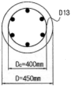
- 1256kN
- 2584kN
- 3091kN
- 4313kN
(정답률: 43%)